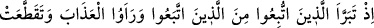
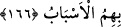

benzetilmiştir. Fakat bu kalb için kullanılınca “kalbin meyli” mânâsını taşır. Çünkü kalb
sürekli bir arzu ve meyil içindedir. Kulun Allah’a olan muhabbeti, emirlerini tutmak ve
nehiylerinden kaçınmak sûretiyle devamlı O’na tâat içinde olmayı istemesidir. Allah’ın
kula muhabbeti ise ona ikramda bulunmayı, onu tâatinde kullanmayı ve onu
kötülüklerden korumayı irâde buyurmasıdır.
Sonra mü’minlerin muhabbetini müşriklerinkinden ayırarak, îmân edenlerin Allah’a
duydukları sevginin, kâfirlerin putlarına olan sevgisinden daha şiddetli olduğunu
belirtmiştir. Çünkü mü’minlerin Allah’a olan sevgi ve muhabbetleri asla kesinti kabûl
etmez. Müşriklerin putlara olan sevgisi ise bozuk bazı maksadlara bağlı olduğu için
ufak tefek sebeblerle yok olmaya mahkûmdur. Bu yüzden müşrikler belâ ve musîbet
zamanlarında putlarını bırakıp Allah’a dönerek O’na yalvarıyorlardı. Bazen bir puta
belli bir zaman tapıyorlar, fakat hoşlarına giden başka bir put görünce öncekini bırakıp
buna bağlanıyorlardı. Rivâyet olunduğuna göre Bâhile adında bir kadın kendisi için
yiyeceklerden bir put yapmıştı. Müşrikler de kıtlık yılında bunu yemişlerdi.
Allah’a eşler koşup onları mâbûd yerine koymak sûretiyle zulme düşenler keşke
putlarının hiçbir güce ve kuvvete sahip olmadıklarını; bilakis her şeyde olduğu gibi
sevap ve azâb bakımından da bütün güç ve kudretin Allah’a âid olduğunu bilselerdi -ki
bunlar kıyâmet gününün azâbını görünce Allah’ın zâlimlere verdiği cezânın ne kadar
şiddetli olduğunu anlayacaklar- putlara itâattan târifi imkânsız bir tarzda pişman olup
vazgeçerlerdi.
“Allah, azâbı pek şiddetli olandır.” cümlesi “Bütün kuvvet Allah’ındır.” cümlesine
bağlı olup ifâdeyi daha güçlü kılmakta ve işin ehemmiyetini ortaya koymaktadır. Çünkü
sadece kuvveti Allah’a tahsîs etmek O’nun azâbının şiddetli olacağını gerektirmez. Zira
Allah Teâlâ, gücü yettiği halde affetmek sûretiyle azâb etmekten vazgeçebilir.
166. İşte o zaman (görecekler ki) kendilerine uyulup arkalarından gidilenler,
uyanlardan hızla uzaklaşırlar ve (o anda her iki taraf da) azâbı görmüş, nihâyet
aralarındaki bağlar kopup parçalanmıştır.
“Teberrî”, tahallus yâni bir şeyden temizlenip kurtulmak mânâsına gelmekle beraber,
yakınında bulunmak istenmeyen şeyden ayrılıp uzaklaşmak anlamında da kullanılır.
Kıyâmet günü gelip de azâbı gördüklerinde kendilerine tâbî olunan reisler, dünyâda
iken savundukları dâvânın bâtıl olduğunu itiraf ederek, kendilerine tâbî olanlardan
uzaklaşırlar, onlara lânetle mukabelede bulunurlar ve aralarındaki bağlar kopup
parçalanır.
Azâbın görülmesi, hem reislerin tâbîlerinden uzaklaşmasına; hem de aynı dine bağlı